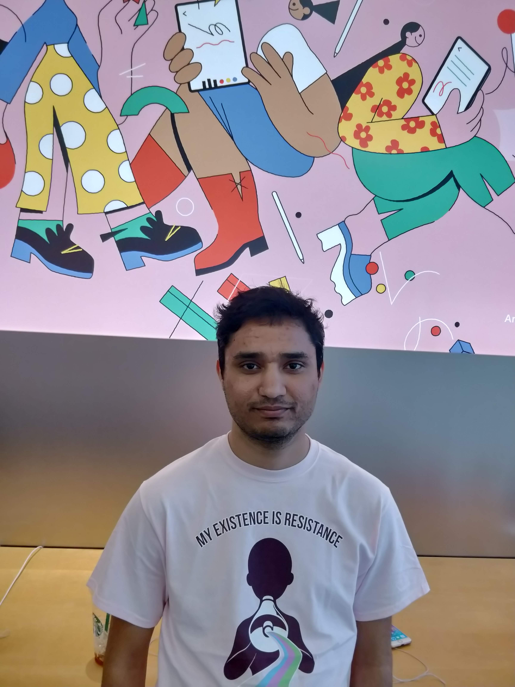

About Me

I am starting as a new faculty member in the School of Engineering at the University of California, Merced. I am excited to help build a new Electrical Engineering department at UC Merced! My research interest is in the mathematical and computational modeling of physical systems to formally design large-scale engineered systems. A flip side of this research that I am excited to explore is the development of scalable (and free!) educational technologies that make classroom learning more interactive and engaging. If any of this sounds interesting to you / if you would like to work with me, please do not hesitate to reach out!
Earlier this year, I finished my PhD in Control and Dynamical Systems from California Institute of Technology in June 2023. My thesis explores the modeling and analysis of synthetic biological circuits towards modular and scalable design. I worked with Richard Murray in the Biocircuits Lab. For more information on my research, please refer to the Publications page. I occasionally write informal technical posts on the Blog page.
In 2019, I graduated with a masters in Electrical Engineering at Caltech. Before that, in 2017, I graduated with a bachelors and a masters degree from the Indian Institute of Technoloy (IIT) Kharagpur, India. My Bachelor of Technology degree is in instrumentation engineering and Master of Technology in control systems engineering from the Electrical Engineering department.
Research Interests
- Control theory
- Computational modeling
- Interactive engineering educational tools
- Data science applications
- Artificial intelligence methods for systems modeling
Milestones
- Jul 2023: Started as a new faculty member at the University of California, Merced!
- Jun 2023: Successfully defended my Ph.D. at Caltech! Look at me: on Twitter.
- Feb 2023: Bioscrape paper accepted for publication in the Journal of Open Source Software (JOSS)! Here is the public review and the paper.
- Jan 2023: Our paper on the characterization of integrase and excisionase dynamics in cell-free using a novel modeling and analysis pipeline was accepted for publication in ACS Synthetic Biology. DOI: 10.1021/acssynbio.2c00534
- Oct 2022: Workshop on modeling and analysis tools at IWBDA 2022 and at iGEM Grand Jamboree on "Learning Parameters from Experimental Data using Bayesian Inference and Model Reduction". Computational notebook on model reduction with AutoReduce is available here and the computational notebook on parameter inference with Biosrape is available here.
- Oct 2022: Co-organizing a special issue on bio-design automation for ACS Synthetic Biology. More details here.
- Oct 2022: Served as the publication chair at the IWBDA 2022!
- Aug 2022: Two papers (one on contract-based design for synthetic biology and the other on a modeling and analysis pipeline) accepted at the 14th International Workshop on Bio-Design Automation (IWBDA) 2022. To be organized in Paris, France together with iGEM Grand Jamboree, 2022. Both papers were accepted as talks.
- April 2022: Last lecture at Harvey Mudd! It was a pleasure teaching the class on Introduction to Biological System Design at the Harvey Mudd College. Here's a snapshot of the class review lecture at the end:

- April 2022: New preprint! We posted a new bioRxiv preprint on our recent work: "From Specification to Implementation: Assume-Guarantee Contracts for Synthetic Biology". PDF on bioRxiv. You can use the implementation of our paper on Google Colab to convert your own biological system specification into simple mathematical models!
- March 2022: Presented a poster at the 8th Build-A-Cell workshop on "Full-Stack Modeling of Biological Circuits: From Specifications to Implementation using Python. PDF.
- February 2022: Our paper on "BioCRNpyler: Compiling Chemical Reaction Networks from Biomolecular Parts in Diverse Contexts" was accepted (in February) and published (in April) in PLoS Computational Biology.
- Access the archive of update posts here.
Last updated: August 23, 2023. All original material on this website is free-to-use and can be shared with proper attribution. You can view the LICENSE here.